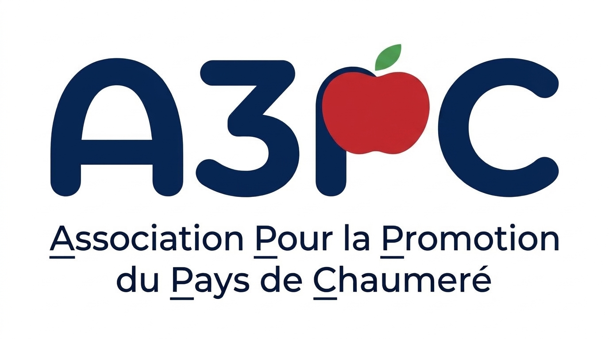

De mes clients à tout le village : la naissance de l'A3PC
Première étape : aider mes clients.
Quand on arrive dans une région qu'on ne connaît pas, il n'est pas facile de savoir ce qu'il y a autour : où faire ses courses, quoi visiter, à qui s'adresser. Je voulais que mes futurs hôtes trouvent tout cela facilement, sans avoir à chercher.
Deuxième étape : et si cela servait à tout le monde ?
Le site étant en ligne, je me suis dit que ce travail pouvait profiter à d'autres que mes clients. Le projet d'une application accessible à tous est né : un outil pensé pour les visiteurs de passage comme pour les habitants.
Troisième étape : une association, et surtout du lien.
Fin septembre, l'idée est allée plus loin. Plutôt que de garder cela autour de mon activité, pourquoi ne pas l'organiser au sein d'une association, avec une dimension locale plus large, et en profiter pour recréer du lien social ?
Les temps sont durs. L'essence est chère, les services de proximité s'éloignent, et on se retrouve vite seul face aux petits tracas du quotidien. Dans une campagne comme la nôtre, se rendre service entre voisins n'a rien d'un luxe.
Le 27 septembre, le projet est devenu concret : la demande d'enregistrement de l'association a été déposée. Elle s'appelle l'A3PC, l'Association pour la Promotion du Pays de Chaumeré.

Ce que l'on veut construire ensemble :
- des événements de village, pour se retrouver ;
- des connaissances partagées (pour les outils, on verra plus tard) ;
- l'entraide et les services de proximité, quand les temps sont durs ;
- le don plutôt que la déchetterie : ce dont on n'a plus besoin peut servir à un voisin ;
- un gage de sécurité : une voiture à vendre ou un appartement à louer, c'est plus rassurant quand cela passe par un voisin ;
- un outil de promotion pour les artisans et commerçants du coin : réparation de voiture, services paysagers, gîtes, vente de produits de la ferme...
Et le gîte dans tout cela ?
Le lien reste simple : en réservant en direct sur ce site, aucune commission n'est versée à une plateforme et, si vous le souhaitez, vous pouvez en reverser l'équivalent à l'association. Le projet a déjà fédéré une voisine engagée, et j'espère élargir ce cercle à d'autres habitants.